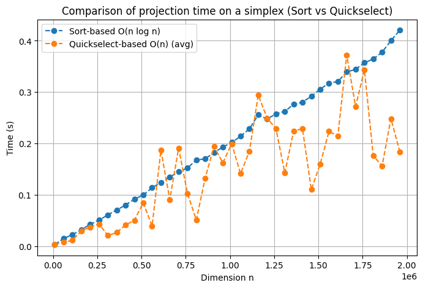

import time
import random
import numpy as np
import matplotlib.pyplot as pltHere we can find implementaton of the 1st \mathcal{O}(n \log n) algorithm, using Quicksort:
def project_simplex_sort(y):
"""
Projects the vector y onto the unit simplex {x >= 0, sum(x) = 1}.
Difficulty: O(n log n).
"""
y = np.asarray(y, dtype=float)
n = len(y)
# If the sum is already <= 1 and all coordinates are non-negative,
# then this is already a point on the simplex (you need to check).
# But the classics usually assume sum(y) >= 1,
# nevertheless, we will add protection:
if np.all(y >= 0) and np.abs(y.sum() - 1.0) < 1e-12:
return y.copy()
# Sort in descending order
y_sorted = np.sort(y)[::-1]
y_cumsum = np.cumsum(y_sorted)
# Finding rho
# We are looking for the largest k for which y_sorted[k] - (cumsum[k]-1)/(k+1) > 0
rho = 0
for k in range(n):
val = y_sorted[k] - (y_cumsum[k] - 1.0)/(k + 1)
if val > 0:
rho = k + 1
# Counting the theta threshold
theta = (y_cumsum[rho - 1] - 1.0) / rho
# Building x
x = np.maximum(y - theta, 0.0)
return xAnd here we can find an implementation of an algorithm of average complexity \mathcal{O}(n), but in the worst case \mathcal{O}(n^2). The idea is that we consistently (as a recursive or iterative approach) search for the “pivot” threshold so that about half of the elements end up on one side of the threshold. Due to randomization, the average work time is obtained \mathcal{O}(n):
def project_simplex_linear(y):
"""
Projects the vector y onto the unit simplex,
using the idea of a quick pivot selection.
Average difficulty: O(n).
"""
y = np.asarray(y, dtype=float)
n = len(y)
# If the sum is not more than 1 and y >= 0, then it is already in the simplex
if np.all(y >= 0) and y.sum() <= 1.0:
return y.copy()
# Auxiliary function for recursive search
def find_pivot_and_sum(indices, current_sum, current_count):
if not indices:
return current_sum, current_count, [], True
# Randomly choosing the index for the pivot
pivot_idx = random.choice(indices)
pivot_val = y[pivot_idx]
# Dividing the elements into >= pivot and < pivot
bigger = []
smaller = []
sum_bigger = 0.0
for idx in indices:
val = y[idx]
if val >= pivot_val:
bigger.append(idx)
sum_bigger += val
else:
smaller.append(idx)
# Checking to see if we have reached the condition
# sum_{waltz>= pivot_val} (val - pivot_val) < 1 ?
# Considering that we already have current_sum/current_count
new_sum = current_sum + sum_bigger
new_count = current_count + len(bigger)
# Condition: sum_{v>= pivot} (pivot) = new_sum - new_count * pivot
# Compare with 1
if (new_sum - new_count * pivot_val) < 1.0:
# So pivot_val can still be (or higher)
# -> moving towards the "smaller ones" (where we can raise the pivot)
return (new_sum, new_count, smaller, False)
else:
# pivot_val is too big, we need to go to the "big ones",
# i.e. those that are exactly >= pivot, we stay with them
# (which may be even higher than the actual threshold).
# But pivot_idx itself is also being removed from the proceedings.
# (since we know for sure that pivot_val < the true threshold).
if pivot_idx in bigger:
bigger.remove(pivot_idx)
new_sum -= pivot_val
new_count -= 1
return (current_sum, current_count, bigger, False)
indices = list(range(n))
s = 0.0
c = 0
while indices:
s, c, indices, done = find_pivot_and_sum(indices, s, c)
if done:
break
# When finished, we have "rho =c" and "sum =s"
# theta = (s - 1)/c
theta = (s - 1.0)/c
x = np.maximum(y - theta, 0)
return xLet’s generate several large-dimensional vectors (for example, from 10.000 to 500.000) and measure the running time of both simplex projection algorithms:
def check_projection_simplex(x, tol=1e-9):
"""
Проверяет, что x проецирован на единичный симплекс:
1) x_i >= 0 для всех i
2) sum(x_i) ~ 1 (с некоторой точностью)
"""
if (x < -tol).any():
return False
s = x.sum()
return abs(s - 1.0) < tol
def generate_dims(start, stop, step):
return np.arange(start, stop + step, step).tolist()
dims = generate_dims(10_000, 1_950_000, 50_000)
times_sort = []
times_linear = []
np.random.seed(42)
for d in dims:
y = np.random.rand(d) * 2.0
start = time.perf_counter()
x_sort = project_simplex_sort(y)
t_sort = time.perf_counter() - start
start = time.perf_counter()
x_lin = project_simplex_linear(y)
t_lin = time.perf_counter() - start
times_sort.append(t_sort)
times_linear.append(t_lin)
assert check_projection_simplex(x_sort), "Sort-based projection incorrect!"
assert check_projection_simplex(x_lin), "Linear-based projection incorrect!"
print(f"dim={d}, time_sort={t_sort:.4f}s, time_lin={t_lin:.4f}s")
# Построим графики
plt.figure(figsize=(8, 5))
plt.plot(dims, times_sort, 'o--', label='Sort-based O(n log n)')
plt.plot(dims, times_linear, 'o--', label='Quickselect-based O(n) (avg)')
plt.xlabel('Dimension n')
plt.ylabel('Time (s)')
plt.title('Comparison of projection time on a simplex (Sort vs Quickselect)')
plt.legend()
plt.grid(True)
plt.show()dim=10000, time_sort=0.0037s, time_lin=0.0033s
dim=60000, time_sort=0.0153s, time_lin=0.0085s
dim=110000, time_sort=0.0227s, time_lin=0.0115s
dim=160000, time_sort=0.0325s, time_lin=0.0303s
dim=210000, time_sort=0.0428s, time_lin=0.0373s
dim=260000, time_sort=0.0510s, time_lin=0.0434s
dim=310000, time_sort=0.0610s, time_lin=0.0210s
dim=360000, time_sort=0.0708s, time_lin=0.0269s
dim=410000, time_sort=0.0802s, time_lin=0.0416s
dim=460000, time_sort=0.0919s, time_lin=0.0506s
dim=510000, time_sort=0.0997s, time_lin=0.0847s
dim=560000, time_sort=0.1141s, time_lin=0.0397s
dim=610000, time_sort=0.1240s, time_lin=0.1871s
dim=660000, time_sort=0.1349s, time_lin=0.0911s
dim=710000, time_sort=0.1449s, time_lin=0.1910s
dim=760000, time_sort=0.1525s, time_lin=0.1030s
dim=810000, time_sort=0.1680s, time_lin=0.0513s
dim=860000, time_sort=0.1702s, time_lin=0.1326s
dim=910000, time_sort=0.1824s, time_lin=0.1944s
dim=960000, time_sort=0.1931s, time_lin=0.1624s
dim=1010000, time_sort=0.2021s, time_lin=0.1996s
dim=1060000, time_sort=0.2140s, time_lin=0.1413s
dim=1110000, time_sort=0.2287s, time_lin=0.1847s
dim=1160000, time_sort=0.2557s, time_lin=0.2943s
dim=1210000, time_sort=0.2475s, time_lin=0.2495s
dim=1260000, time_sort=0.2578s, time_lin=0.2290s
dim=1310000, time_sort=0.2626s, time_lin=0.1429s
dim=1360000, time_sort=0.2762s, time_lin=0.2241s
dim=1410000, time_sort=0.2805s, time_lin=0.2289s
dim=1460000, time_sort=0.2921s, time_lin=0.1103s
dim=1510000, time_sort=0.3057s, time_lin=0.1602s
dim=1560000, time_sort=0.3176s, time_lin=0.2236s
dim=1610000, time_sort=0.3205s, time_lin=0.2146s
dim=1660000, time_sort=0.3392s, time_lin=0.3725s
dim=1710000, time_sort=0.3442s, time_lin=0.2719s
dim=1760000, time_sort=0.3570s, time_lin=0.3431s
dim=1810000, time_sort=0.3645s, time_lin=0.1760s
dim=1860000, time_sort=0.3777s, time_lin=0.1566s
dim=1910000, time_sort=0.4000s, time_lin=0.2485s
dim=1960000, time_sort=0.4205s, time_lin=0.1840s
Thus, we see that the second algorithm is always superior to the first one on average, but in some few cases the first one is superior to the second one. Apparently, in these cases, the most “inconvenient” cases for the second algorithm are implemented.